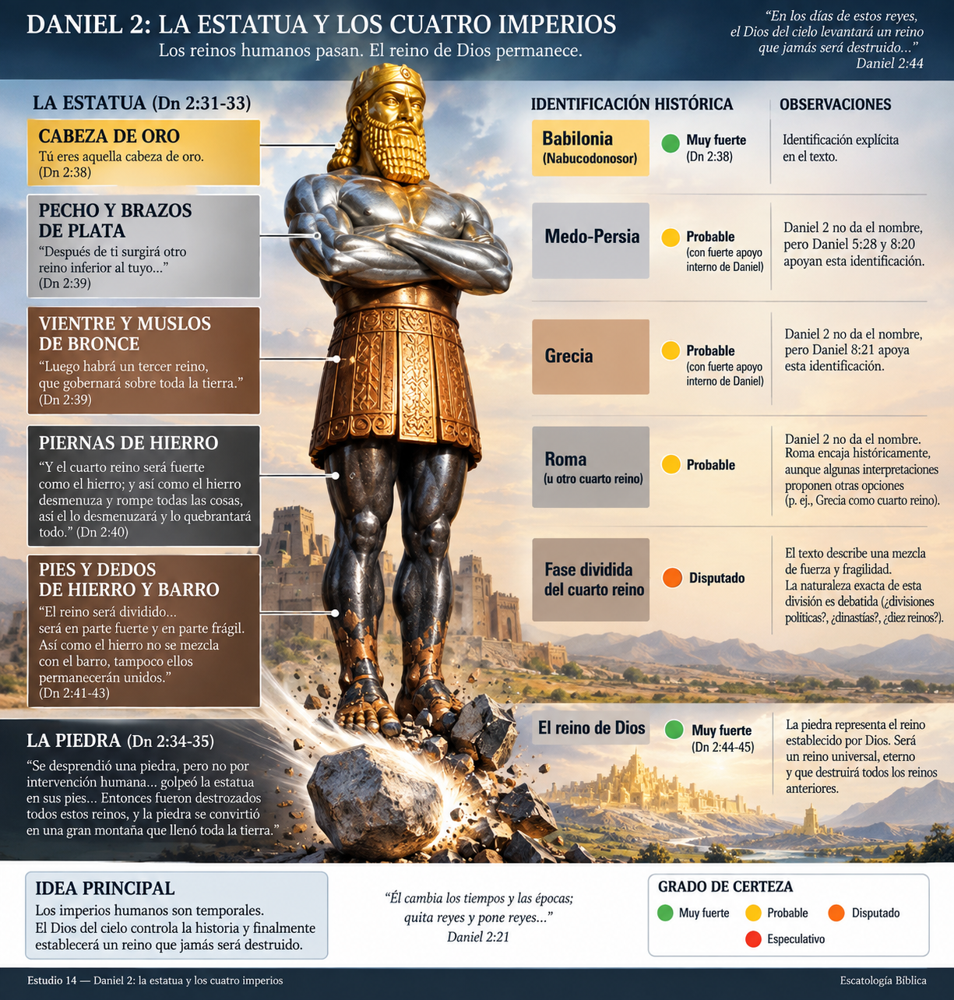
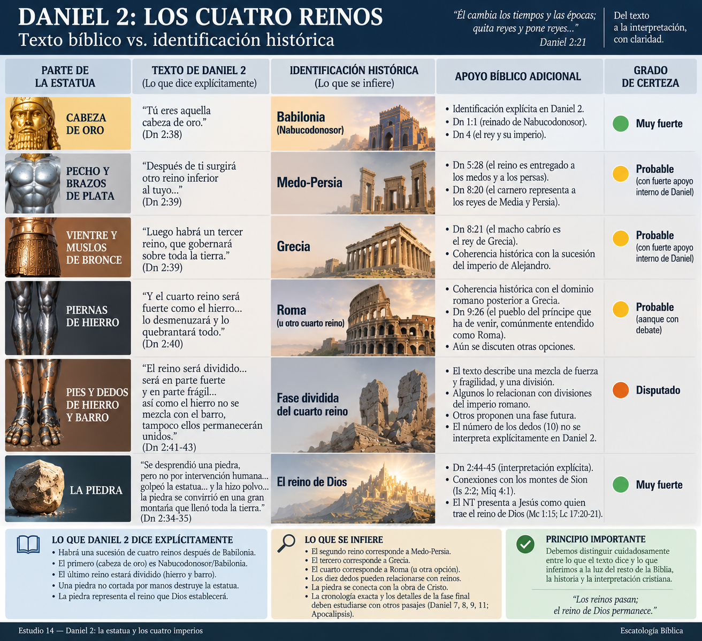
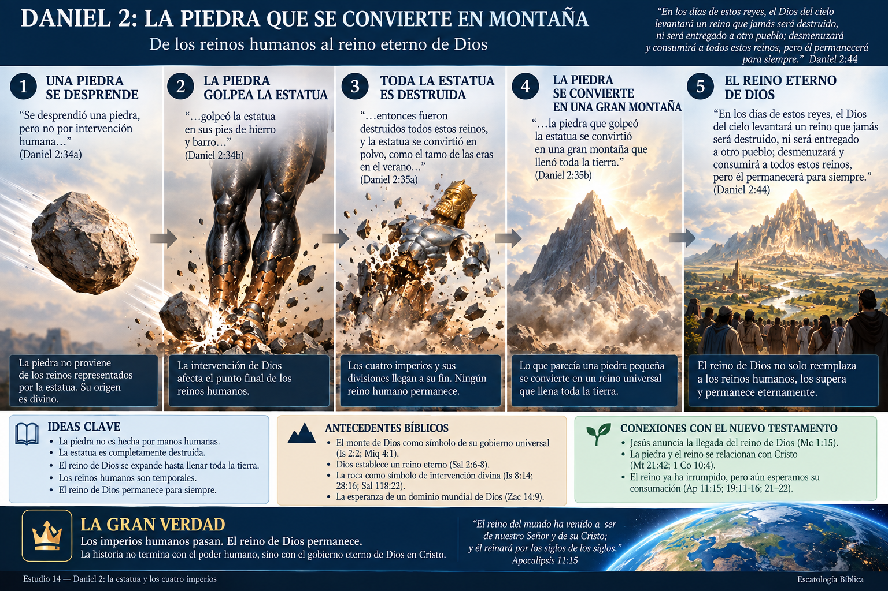
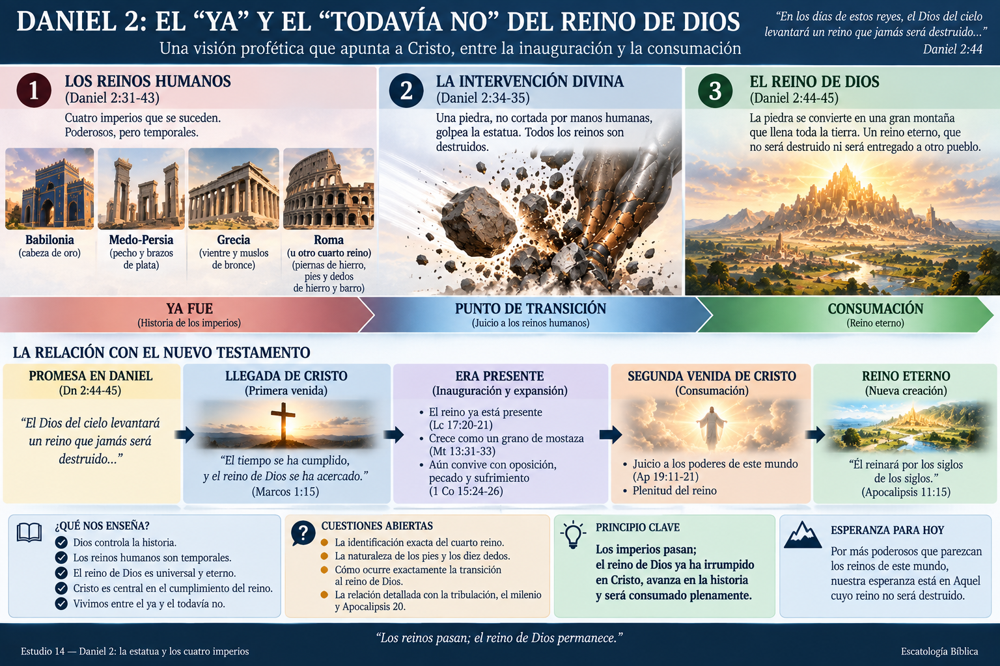

Texto principal: Daniel 2 Enfoque: la visión de Nabucodonosor, los cuatro reinos, la piedra y el reino eterno de Dios. Pregunta central: ¿Qué quiso revelar Dios mediante la estatua y qué podemos afirmar —y qué no— acerca de los cuatro imperios?
Daniel 2 es uno de los capítulos fundamentales para estudiar la escatología bíblica. Pero también es uno de los textos donde resulta fácil comenzar con un sistema ya armado y después intentar encajar cada detalle.
Nuestro método será el contrario:
texto → contexto → símbolos → antecedentes bíblicos → conexiones → interpretaciones → conclusión.
Y algo será especialmente importante: Daniel 2 no termina con la estatua. Termina con la piedra.
El centro teológico del sueño no son los imperios humanos, sino el reino que Dios establecerá y que “jamás será destruido” (Dn 2:44).
Daniel 2 nos sitúa durante el reinado de Nabucodonosor, rey de Babilonia.
Jerusalén había comenzado a experimentar el dominio babilónico y Daniel se encontraba entre los judíos llevados al ámbito imperial.
La pregunta que atraviesa el libro comienza a tomar forma:
¿Quién gobierna realmente la historia cuando el pueblo de Dios está sometido a imperios paganos?
Desde una perspectiva humana, la respuesta parecía evidente:
Nabucodonosor.
Pero Daniel 2 presenta otra realidad.
El capítulo afirma repetidamente que el verdadero soberano es el Dios del cielo.
Daniel declara:
“Sea bendito el nombre de Dios por los siglos de los siglos, porque suyos son el poder y la sabiduría. Él cambia los tiempos y las épocas; quita reyes y pone reyes...” — Daniel 2:20–21
Esto proporciona la clave teológica para interpretar todo lo que sigue.
Los reinos aparecen, dominan y desaparecen.
Dios permanece.
Daniel 2 comienza con el rey profundamente perturbado por un sueño.
Convoca a:
Pero Nabucodonosor exige algo extraordinario: no solamente quiere que interpreten el sueño, sino que sean capaces de decirle qué soñó.
Los sabios responden:
“No hay hombre sobre la tierra que pueda declarar el asunto del rey...” — Daniel 2:10
Narrativamente, esto es importantísimo.
El texto prepara un contraste:
sabiduría humana → incapaz
revelación divina → capaz
Daniel tampoco posee naturalmente el conocimiento.
Él necesita que Dios se lo revele.
“Entonces el misterio le fue revelado a Daniel en una visión nocturna...” — Daniel 2:19
Daniel 2 no presenta a Daniel como un adivino excepcional.
Presenta a Dios como revelador de misterios.
Daniel mismo lo aclara:
“Pero hay un Dios en los cielos, el cual revela los misterios...” — Daniel 2:28
Esta expresión será importante durante todo el libro.

Nabucodonosor había visto una enorme figura.
Daniel describe cuatro secciones principales:
| Parte | Material |
|---|---|
| Cabeza | Oro |
| Pecho y brazos | Plata |
| Vientre y muslos | Bronce |
| Piernas | Hierro |
| Pies | Hierro mezclado con barro |
Después aparece algo completamente diferente.
Una piedra:
“...se desprendió una piedra, pero no por intervención humana...” — Daniel 2:34
La piedra golpea la estatua en los pies.
Entonces ocurre algo sorprendente.
No solamente destruye los pies.
Toda la estatua colapsa.
Oro, plata, bronce, hierro y barro terminan pulverizados.
Finalmente:
“Pero la piedra que golpeó la estatua se convirtió en una gran montaña que llenó toda la tierra.” — Daniel 2:35
Aquí tenemos la estructura básica del sueño:
cuatro reinos humanos → intervención divina → destrucción de los reinos → reino universal de Dios.
Daniel comienza la interpretación directamente con Nabucodonosor.
“Tú eres aquella cabeza de oro.” — Daniel 2:38
Esto es explícito.
La cabeza de oro representa a Nabucodonosor y, por extensión natural, al reino babilónico que él encabeza.
Daniel incluso explica que su autoridad procede finalmente de Dios:
“El Dios del cielo te ha dado reino, poder, fuerza y majestad...” — Daniel 2:37
Aquí aparece nuevamente la teología del capítulo.
Nabucodonosor posee un enorme poder.
Pero no es poder autónomo.
El Dios del cielo se lo ha concedido.
Daniel continúa:
“Después de ti surgirá otro reino inferior al tuyo...” — Daniel 2:39
El texto no proporciona aquí el nombre.
Eso significa que debemos distinguir cuidadosamente entre:
lo que Daniel 2 dice explícitamente
y
lo que podemos identificar comparando Daniel con la historia y con capítulos posteriores.
Habrá un reino posterior a Babilonia.
Ese reino corresponde al dominio medo-persa.
¿Por qué?
Porque Daniel posteriormente identifica explícitamente a medos y persas en relación con el reino que sucede a Babilonia.
Daniel 5:28 interpreta la caída de Babilonia:
“Tu reino ha sido dividido y entregado a los medos y a los persas.”
Además, Daniel 8 presenta un carnero identificado directamente:
“El carnero que viste, con sus dos cuernos, representa a los reyes de Media y Persia.” — Daniel 8:20
Por eso la identificación no depende simplemente de reconstrucciones externas.
El propio libro proporciona fuertes pistas.
Daniel dice:
“Luego habrá un tercer reino, de bronce, que gobernará sobre toda la tierra.” — Daniel 2:39
Otra vez Daniel 2 no proporciona directamente el nombre.
Pero Daniel 8 vuelve a ayudarnos.
Después del imperio medo-persa aparece otro poder:
“El macho cabrío es el rey de Grecia...” — Daniel 8:21
Daniel presenta una sucesión de reinos después de Babilonia.
El tercer reino corresponde al imperio griego.
Históricamente esto encaja naturalmente con la expansión macedónica iniciada por Alejandro Magno y con los reinos helenísticos posteriores.
Pero debemos esperar a Daniel 7–8 antes de desarrollar todos esos detalles.
No conviene introducirlos artificialmente en Daniel 2.
Aquí la descripción se vuelve considerablemente más extensa.
“Y el cuarto reino será fuerte como el hierro; y así como el hierro desmenuza y rompe todas las cosas, así él lo desmenuzará y lo quebrantará todo.” — Daniel 2:40
El hierro comunica principalmente una característica:
fuerza destructiva.
El cuarto reino posee una capacidad extraordinaria para quebrantar y someter.
Pero después aparece una peculiaridad.
El hierro llega hasta los pies, donde se mezcla con barro.
Daniel explica:
“Lo que viste de los pies y los dedos, en parte de barro cocido de alfarero y en parte de hierro, significa que el reino será dividido...” — Daniel 2:41
Y añade:
“...así el reino será en parte fuerte y en parte frágil.” — Daniel 2:42
Este detalle es fundamental.
El último reino de la secuencia presenta simultáneamente:
fortaleza + fragilidad.
El hierro continúa presente.
Pero ya no posee la homogeneidad de las piernas.
Daniel continúa:
“Así como el hierro no se mezcla con el barro, tampoco ellos permanecerán unidos.” — cf. Daniel 2:43
El texto describe una unidad inestable.
La naturaleza exacta de esa división.
¿Describe divisiones políticas?
¿Dinastías?
¿Alianzas?
¿Una fase histórica determinada?
¿Una configuración escatológica futura?
Daniel 2 por sí solo no resuelve todas esas preguntas.
❓ Debemos mantener abierta la identificación precisa hasta estudiar Daniel 7 y los textos relacionados.

Esta es una de las preguntas centrales.
La interpretación cristiana tradicional más extendida identifica la secuencia aproximadamente así:
Babilonia → Medo-Persia → Grecia → Roma
Hay razones importantes para esta lectura.
Babilonia está explícitamente identificada.
Daniel posteriormente identifica Medo-Persia y Grecia.
Históricamente, Roma emerge posteriormente como la gran potencia que domina el mundo mediterráneo y finalmente controla Judea.
Roma constituye una identificación históricamente fuerte para el cuarto reino.
Sin embargo, debemos introducir una precisión importante.
Existe otra reconstrucción utilizada especialmente por numerosos intérpretes histórico-críticos:
Babilonia → Media → Persia → Grecia
Según esa lectura, Grecia sería el cuarto reino, especialmente en relación con la crisis producida por Antíoco IV Epífanes.
La principal dificultad para separar completamente Media y Persia es que Daniel en otros lugares tiende a presentarlas estrechamente vinculadas.
Daniel 8 es especialmente importante porque el carnero representa conjuntamente:
“los reyes de Media y Persia.”
Por eso, dentro de la estructura interna del libro, la secuencia:
Babilonia → Medo-Persia → Grecia → cuarto reino
parece tener una ventaja contextual considerable.
Pero todavía necesitamos Daniel 7–8 antes de formular una conclusión más completa.
Aquí debemos evitar un error interpretativo frecuente.
Daniel describe:
pies y dedos
compuestos de hierro y barro.
Sin embargo, Daniel 2 no dice explícitamente:
“los diez dedos son diez reyes”.
El número diez puede parecer significativo, especialmente cuando posteriormente Daniel 7 presenta diez cuernos.
Pero debemos permitir que Daniel 7 hable por sí mismo cuando lleguemos allí.
Relacionar los dedos de Daniel 2 con los diez cuernos de Daniel 7 puede ser razonable.
Identificar directamente los diez dedos con diez países modernos concretos basándose únicamente en Daniel 2.
El texto no proporciona esos nombres.
Por eso debemos evitar convertir mapas políticos contemporáneos en claves interpretativas automáticas.
Llegamos al verdadero clímax del capítulo.
Mientras existe la estatua:
“...se desprendió una piedra, pero no por intervención humana...” — Daniel 2:34
La expresión señala una intervención cuyo origen no pertenece simplemente al sistema humano representado por la estatua.
La piedra golpea la imagen.
Y entonces:
hierro → destruido
barro → destruido
bronce → destruido
plata → destruida
oro → destruido
Toda la estructura imperial desaparece.
Después:
“la piedra que golpeó la estatua se convirtió en una gran montaña que llenó toda la tierra.”
Aquí el sueño cambia completamente de lógica.
Los imperios anteriores se reemplazan unos a otros.
Pero el último reino no simplemente reemplaza a otro imperio.
Termina con toda la estructura de los reinos representados por la estatua.

Afortunadamente no necesitamos adivinar qué representa.
Daniel lo explica:
“En los días de estos reyes, el Dios del cielo levantará un reino que jamás será destruido...” — Daniel 2:44
Este reino:
La piedra representa el reino establecido por Dios.
Esta es probablemente la afirmación escatológica más importante del capítulo.
La historia no termina con Babilonia.
Ni con Persia.
Ni con Grecia.
Ni con Roma —si esa identificación es correcta—.
Termina con:
Este detalle tiene importantes antecedentes veterotestamentarios.
En el AT, el monte de Dios/Sion puede funcionar como imagen del lugar del gobierno y presencia divina.
Isaías presenta una visión sorprendentemente relacionada:
“En los últimos días, el monte de la casa del Señor será establecido como cabeza de los montes... y hacia él correrán todas las naciones.” — cf. Isaías 2:2
También Miqueas 4 presenta una imagen semejante.
Daniel 2 describe una piedra que:
se convierte en montaña → llena toda la tierra.
Existe un fuerte trasfondo bíblico que conecta la montaña con el gobierno universal de Dios.
Pero debemos evitar decir que Daniel está simplemente copiando Isaías.
La conexión es temática y canónica.
La estatua es enorme.
Pero finalmente desaparece.
La piedra comienza pequeña en comparación.
Pero termina llenándolo todo.
Esta inversión es teológicamente poderosa.
Los reinos humanos parecen gigantescos.
El reino de Dios inicialmente puede parecer insignificante.
Sin embargo, el resultado final es exactamente el contrario:
la estatua desaparece
mientras
la montaña llena la tierra.
Esto prepara una importante conexión con el NT.
Cuando Jesús comienza su ministerio proclama:
“El tiempo se ha cumplido, y el reino de Dios se ha acercado.” — Marcos 1:15
La proclamación del reino constituye uno de los centros del ministerio de Jesús.
Daniel había anunciado:
Dios establecerá su reino.
Jesús anuncia:
el reino de Dios se ha acercado.
El NT presenta a Jesús como figura central en el cumplimiento del reino prometido por los profetas.
Pero aparece una cuestión importante.
Daniel 2 parece describir una victoria decisiva y total.
Mientras que en el ministerio de Jesús el reino comienza en un mundo donde todavía continúan existiendo poderes humanos, pecado, muerte y oposición.
Esto introduce una tensión que posteriormente será fundamental:

Aquí aparecen diferentes interpretaciones cristianas.
Según esta lectura, la piedra comienza su expansión mediante la primera venida de Cristo.
El reino ya está presente, aunque todavía no haya alcanzado su consumación final.
Textos como:
son frecuentemente utilizados para apoyar esta perspectiva.
El NT enseña que el reino de Dios ya irrumpió de alguna manera mediante Cristo.
Otros intérpretes enfatizan que Daniel describe una destrucción completa de los reinos humanos.
Como esto todavía no ha ocurrido plenamente, consideran que Daniel 2:44–45 apunta principalmente hacia una futura intervención escatológica de Cristo.
Textos relacionados suelen incluir:
Daniel 2 contiene claramente una dimensión de consumación futura, porque el reino finalmente elimina toda oposición y permanece eternamente.
No necesariamente debemos escoger entre:
presente
o
futuro.
El NT frecuentemente presenta el reino como:
ya presente
pero
todavía no consumado.
Por eso parece contextual y canónicamente fuerte entender que el reino anunciado por Daniel encuentra su inauguración en Cristo y alcanzará su manifestación plena en la consumación escatológica.
Esta lectura explica mejor la tensión entre la proclamación neotestamentaria de que el reino ya llegó y la evidente expectativa de una victoria futura completa.
Pero Daniel 2, considerado aisladamente, no explica todas las etapas de ese proceso.
❓ La relación cronológica exacta deberá construirse progresivamente con otros textos.
Esta pregunta requiere precisión.
El NT utiliza varias veces imágenes de piedra aplicadas a Cristo.
Por ejemplo:
“La piedra que desecharon los constructores ha venido a ser la piedra angular.” — Mateo 21:42
Y poco después aparece lenguaje de caída y trituración relacionado con esa piedra.
Esto ha llevado a muchos intérpretes cristianos a relacionar Mateo 21 con Daniel 2.
Existe una conexión conceptual importante entre Cristo, la piedra y el juicio/reino de Dios.
Sin embargo:
Daniel 2 interpreta explícitamente la piedra como el reino establecido por Dios, no simplemente como una identificación individual directa.
Por eso es mejor decir:
Cristo es inseparable del reino de Dios y es su Rey mesiánico, pero no debemos borrar la propia explicación que Daniel da del símbolo.
Este punto es crucial.
Daniel dice:
“Desmenuzará y consumirá a todos estos reinos...” — Daniel 2:44
Pero el capítulo no explica detalladamente cómo ocurre esa destrucción.
Aquí las escuelas escatológicas comienzan a diferenciarse.
La destrucción corresponde principalmente a una intervención futura de Cristo que termina con los poderes mundiales.
El reino comenzó con Cristo, avanza durante la era presente y culminará en la segunda venida y el juicio.
La piedra que crece hasta llenar la tierra puede relacionarse con la expansión histórica progresiva del reino antes de la consumación.
Pueden enfatizar la irrupción histórica del reino mesiánico durante el período relacionado con los imperios antiguos, especialmente Roma.
Daniel 2 permite afirmar con seguridad el resultado, pero no proporciona por sí mismo toda la mecánica cronológica.
El reino de Dios finalmente triunfa sobre los reinos humanos.
La secuencia exacta mediante la cual ocurre ese triunfo.
Daniel 2 por sí solo no decide entre todos los modelos mileniales posteriores.
Por eso sería metodológicamente incorrecto convertir este capítulo en una prueba automática de premilenialismo, amilenialismo o postmilenialismo.
Daniel 2:44 contiene una expresión que ha generado enorme discusión:
“En los días de estos reyes, el Dios del cielo levantará un reino...”
¿Quiénes son “estos reyes”?
Una posibilidad es que se refiera al período representado por el cuarto reino.
Otra interpretación relaciona específicamente la expresión con la configuración representada por los pies y dedos.
Esto afecta profundamente la cronología.
Si el cuarto reino es Roma y el reino comienza durante el período romano, existe una correspondencia histórica notable con la primera venida de Cristo.
Jesús nace y desarrolla su ministerio precisamente bajo dominio romano.
Eso fortalece considerablemente la lectura inaugurada.
Sin embargo, la destrucción completa descrita en Daniel todavía plantea la cuestión de la consumación.
Por eso nuevamente aparece:
inauguración → desarrollo → consumación
como una posibilidad explicativa importante.
Aunque estudiaremos Daniel 7 en profundidad posteriormente, debemos notar una relación estructural básica.
Daniel 2 presenta:
cuatro reinos → reino eterno de Dios
Daniel 7 también presentará:
cuatro reinos → juicio divino → reino eterno
Esta correspondencia es demasiado importante para ignorarla.
Daniel 2 y Daniel 7 contienen estructuras paralelas.
Eso significa que Daniel 7 será fundamental para comprobar y refinar nuestras identificaciones.
Pero todavía no debemos importar todos sus detalles hacia Daniel 2.
| Afirmación | Evaluación |
|---|---|
| La estatua representa una sucesión de reinos | 🟢 Muy fuerte |
| La cabeza de oro representa Babilonia/Nabucodonosor | 🟢 Muy fuerte |
| Dios controla el ascenso y caída de los reyes | 🟢 Muy fuerte |
| Habrá cuatro reinos principales en la secuencia visionaria | 🟢 Muy fuerte |
| El segundo reino corresponde a Medo-Persia | 🟡 Probable, con fuerte apoyo interno |
| El tercero corresponde a Grecia | 🟡 Probable, con fuerte apoyo interno |
| El cuarto corresponde a Roma | 🟡 Probable |
| Media y Persia deben separarse como segundo y tercer imperio | 🟠 Disputado |
| Los pies representan una fase caracterizada por fuerza y fragilidad | 🟢 Muy fuerte |
| Los diez dedos representan exactamente diez reinos | 🟠 Disputado |
| Los diez dedos corresponden a diez países modernos identificables | 🔴 Especulativo |
| La piedra representa el reino establecido por Dios | 🟢 Muy fuerte |
| Ese reino será universal y eterno | 🟢 Muy fuerte |
| El reino anunciado por Daniel está conectado con Cristo | 🟢 Muy fuerte en la lectura canónica del NT |
| El reino ya irrumpió mediante Cristo | 🟢 Muy fuerte según el NT |
| Daniel 2 incluye una consumación todavía futura | 🟡 Probable |
| Daniel 2 define por sí solo el milenio de Apocalipsis 20 | 🔴 Especulativo |
Es fácil estudiar Daniel 2 preguntando:
“¿Qué país representan los dedos?”
Pero esa no parece ser la preocupación principal del capítulo.
La pregunta fundamental es:
¿Quién gobierna la historia?
Nabucodonosor parece gobernarla.
Después vendrán otros imperios que también parecerán invencibles.
Pero Daniel observa toda la historia desde otra perspectiva.
Los imperios son temporales.
Dios:
“quita reyes y pone reyes.”
La estatua parece gigantesca.
Pero finalmente es reducida a polvo.
La piedra parece pequeña.
Pero finalmente:
llena toda la tierra.
Daniel 2 nos prepara para comprender una afirmación central del NT:
Jesús anuncia y encarna la llegada del reino de Dios.
Los poderes humanos no tienen la última palabra.
La muerte tampoco.
El pecado tampoco.
Los imperios tampoco.
La esperanza cristiana no consiste simplemente en escapar del mundo antes de que todo colapse.
Consiste en que:
el Dios del cielo establecerá su reino.
Y el NT concentra esa esperanza en Cristo:
“El reino del mundo ha venido a ser de nuestro Señor y de su Cristo; y él reinará por los siglos de los siglos.” — Apocalipsis 11:15
Daniel 2 comienza con un rey humano aterrorizado por un sueño.
Termina mostrando una realidad mucho mayor:
Este estudio nos permite agregar algunas piezas nuevas sin rellenar todavía los huecos.
Historia de los reinos humanos
Babilonia ↓ segundo reino — probablemente Medo-Persia 🟡 ↓ tercer reino — probablemente Grecia 🟡 ↓ cuarto reino — probablemente Roma 🟡 ↓ ❓ naturaleza exacta de los pies/dedos ↓ intervención del reino de Dios 🟢 ↓ derrota definitiva de los poderes humanos 🟢 ↓ reino universal y eterno de Dios 🟢
En paralelo, desde el NT:
primera venida de Cristo ↓ irrupción/inauguración del reino 🟢 ↓ ❓ relación exacta entre crecimiento del reino y Daniel 2 ↓ consumación futura del reino 🟡 ↓ reinado definitivo de Dios en Cristo 🟢
Todavía no colocamos aquí:
Anticristo → tribulación → rapto → milenio → secuencia de Apocalipsis.
Esas piezas necesitan sus propios textos antes de incorporarlas al mapa.